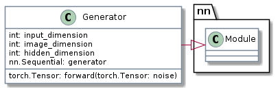
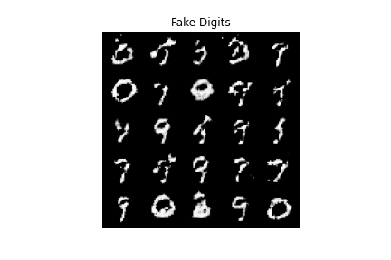

MNIST GAN
Table of Contents
Beginning
Imports
# python
from collections import namedtuple
from functools import partial
from pathlib import Path
# from pypi
from torch import nn
from torchvision import transforms
from torchvision.datasets import MNIST
from torchvision.utils import make_grid
from torch.utils.data import DataLoader
import hvplot.pandas
import matplotlib.pyplot as pyplot
import pandas
import torch
# local code
from graeae import EmbedHoloviews, Timer
Some Setup
First we'll set the manual seed to make this reproducible.
torch.manual_seed(0)
This is a convenience object to time the training.
TIMER = Timer()
This is for plotting.
slug = "mnist-gan"
Embed = partial(EmbedHoloviews, folder_path=f"files/posts/gans/{slug}")
Plot = namedtuple("Plot", ["width", "height", "fontscale",
"tan", "blue", "red", "sizing_mode"],
defaults=[
900,
556,
2,
"#ddb377",
"#4687b7",
"#ce7b6d",
"scale_both",
])()
GANParts = namedtuple("GANParts", ["generator", "generator_optimizer",
"discriminator", "discriminator_optimizer"])
PlotData = namedtuple("PlotData", ["steps", "generator_losses", "discriminator_losses"])
Middle
The MNIST Dataset
The training images we will be using are from a dataset called MNIST. The dataset contains 60,000 images of handwritten digits, from 0 to 9.
The images are 28 pixels x 28 pixels in size. The small size of its images makes MNIST ideal for simple training. Additionally, these images are also in black-and-white so only one dimension, or "color channel", is needed to represent them. Pytorch has a version of it ready-made for their system so we'll use theirs.
The Generator
The first step is to build the generator component.
We'll start by creating a function to make a single layer/block for the generator's neural network. Each block should include a linear transformation (\(y=xA^T + b\)) to the input to another shape, batch normalization for stabilization, and finally a non-linear activation function (ReLU in this case).
def generator_block(input_features: int, output_features: int) -> nn.Sequential:
"""
Creates a block of the generator's neural network
Args:
input_features: the dimension of the input vector
output_features: the dimension of the output vector
Returns:
a generator neural network layer, with a linear transformation
followed by a batch normalization and then a relu activation
"""
return nn.Sequential(
nn.Linear(input_features, output_features),
nn.BatchNorm1d(output_features),
nn.ReLU(inplace=True),
)
Verify the generator block function
def test_gen_block(in_features: int, out_features: int,
test_rows: int=1000) -> None:
"""Test the generator block creator
Args:
in_features: number of features for the block input
out_features: the final number of features for it to output
test_rows: how many rows to put in the test Tensor
Raises:
AssertionError: something isn't right
"""
block = generator_block(in_features, out_features)
# Check the three parts
assert len(block) == 3
assert type(block[0]) == nn.Linear
assert type(block[1]) == nn.BatchNorm1d
assert type(block[2]) == nn.ReLU
# Check the output shape
test_output = block(torch.randn(test_rows, in_features))
assert tuple(test_output.shape) == (test_rows, out_features)
# check the normalization
assert 0.65 > test_output.std() > 0.55
return
test_gen_block(25, 12)
test_gen_block(15, 28)
Building the Generator Class
Now that we have the block-builder we can define our Generator network. It's going to contain a sequence of blocks output by our block-building function and a final two layers that use the linear transformation again, but don't apply normalization and use a Sigmoid Function instead of the ReLU. Each block will have an output double that of the previous one.

class Generator(nn.Module):
"""Generator Class
Args:
input_dimension: the dimension of the noise vector
image_dimension: the dimension of the images, fitted for the dataset used
(MNIST images are 28 x 28 = 784 so that is the default)
hidden_dimension: the initial hidden-layer dimension
"""
def __init__(self, input_dimension: int=10, image_dimension: int=784,
hidden_dimension: int=128):
super().__init__()
self.generator = nn.Sequential(
generator_block(input_dimension, hidden_dimension),
generator_block(hidden_dimension, hidden_dimension * 2),
generator_block(hidden_dimension * 2, hidden_dimension * 4),
generator_block(hidden_dimension * 4, hidden_dimension * 8),
nn.Linear(hidden_dimension * 8, image_dimension),
nn.Sigmoid()
)
return
def forward(self, noise: torch.Tensor) -> torch.Tensor:
"""
Method for a forward pass of the generator
Args:
noise: a noise tensor with dimensions (n_samples, z_dim)
Returns:
generated images.
"""
return self.generator(noise)
Verify the Generator Class
def test_generator(z_dim: int, im_dim: int, hidden_dim: int,
num_test: int=10000) -> None:
"""Test the Generator Class
Args:
z_dim: the size of the input
im_dim: the size of the image
hidden_dim: the size of the initial hidden layer
Raises:
AssertionError: something is wrong
"""
gen = Generator(z_dim, im_dim, hidden_dim).generator
# Check there are six modules in the sequential part
assert len(gen) == 6
test_input = torch.randn(num_test, z_dim)
test_output = gen(test_input)
# Check that the output shape is correct
assert tuple(test_output.shape) == (num_test, im_dim)
# Chechk the output
assert 0 < test_output.max() < 1, "Make sure to use a sigmoid"
assert test_output.min() < 0.5, "Don't use a block in your solution"
assert 0.15 > test_output.std() > 0.05, "Don't use batchnorm here"
return
test_generator(5, 10, 20)
test_generator(20, 8, 24)
Noise
To be able to use the generator, we will need to be able to create noise vectors. The noise vector z has the important role of making sure the images generated from the same class don't all look the same – think of it as a random seed. You will generate it randomly using PyTorch by sampling random numbers from the normal distribution. Since multiple images will be processed per pass, you will generate all the noise vectors at once.
Note that whenever you create a new tensor using torch.ones, torch.zeros, or torch.randn, you either need to create it on the target device, e.g. torch.ones(3, 3, device=device), or move it onto the target device using torch.ones(3, 3).to(device). You do not need to do this if you're creating a tensor by manipulating another tensor or by using a variation that defaults the device to the input, such as torch.ones_like. In general, use torch.ones_like and torch.zeros_like instead of torch.ones or torch.zeros where possible.
get_noise = partial(torch.randn, device="cuda")
# def get_noise(n_samples: int, z_dim: int, device='cuda') -> torch.Tensor:
# """create noise vectors
#
# Args:
# n_samples: the number of samples to generate, a scalar
# z_dim: the dimension of the noise vector, a scalar
# device: the device type
# """
# return torch.randn(n_samples, z_dim, device=device)
Verify the noise vector function
def test_get_noise(n_samples, z_dim, device='cpu'):
noise = get_noise(n_samples, z_dim, device=device)
# Make sure a normal distribution was used
assert tuple(noise.shape) == (n_samples, z_dim)
assert torch.abs(noise.std() - torch.tensor(1.0)) < 0.01
assert str(noise.device).startswith(device)
test_get_noise(1000, 32)
The Discriminator
The second component that you need to construct is the discriminator. As with the generator component, you will start by creating a function that builds a neural network block for the discriminator.
Note: You use leaky ReLUs to prevent the "dying ReLU" problem, which refers to the phenomenon where the parameters stop changing due to consistently negative values passed to a ReLU, which result in a zero gradient.
def get_discriminator_block(input_dim: int, output_dim: int,
negative_slope: float=0.2) -> nn.Sequential:
"""Create the Discriminator block
Args:
input_dim: the dimension of the input vector, a scalar
output_dim: the dimension of the output vector, a scalar
negative_slope: angle for the negative slope
Returns:
a discriminator neural network layer, with a linear transformation
followed by an nn.LeakyReLU activation with negative slope of 0.2
"""
return nn.Sequential(
nn.Linear(input_dim, output_dim),
nn.LeakyReLU(negative_slope=0.2)
)
Verify the discriminator block function
def test_disc_block(in_features, out_features, num_test=10000):
block = get_discriminator_block(in_features, out_features)
# Check there are two parts
assert len(block) == 2
test_input = torch.randn(num_test, in_features)
test_output = block(test_input)
# Check that the shape is right
assert tuple(test_output.shape) == (num_test, out_features)
# Check that the LeakyReLU slope is about 0.2
assert -test_output.min() / test_output.max() > 0.1
assert -test_output.min() / test_output.max() < 0.3
assert test_output.std() > 0.3
assert test_output.std() < 0.5
test_disc_block(25, 12)
test_disc_block(15, 28)
The Discriminator Class
The discriminator class holds 2 values:
- The image dimension
- The hidden dimension
The discriminator will build a neural network with 4 layers. It will start with the image tensor and transform it until it returns a single number (1-dimension tensor) output. This output classifies whether an image is fake or real. Note that you do not need a sigmoid after the output layer since it is included in the loss function. Finally, to use your discrimator's neural network you are given a forward pass function that takes in an image tensor to be classified.
class Discriminator(nn.Module):
"""The Discriminator Class
Args:
im_dim: the dimension of the images, fitted for the dataset used, a scalar
(MNIST images are 28x28 = 784 so that is your default)
hidden_dim: the inner dimension, a scalar
"""
def __init__(self, im_dim: int=784, hidden_dim: int=128):
super().__init__()
self.disc = nn.Sequential(
get_discriminator_block(im_dim, hidden_dim * 4),
get_discriminator_block(hidden_dim * 4, hidden_dim * 2),
get_discriminator_block(hidden_dim * 2, hidden_dim),
nn.Linear(hidden_dim, 1)
)
def forward(self, image: torch.Tensor) -> torch.Tensor:
"""forward pass of the discriminator
Args:
image: a flattened image tensor with dimension (im_dim)
Returns a 1-dimension tensor representing fake/real.
"""
return self.disc(image)
- Verify the discriminator class
def test_discriminator(z_dim, hidden_dim, num_test=100): disc = Discriminator(z_dim, hidden_dim).disc # Check there are three parts assert len(disc) == 4 # Check the linear layer is correct test_input = torch.randn(num_test, z_dim) test_output = disc(test_input) assert tuple(test_output.shape) == (num_test, 1) # Don't use a block assert not isinstance(disc[-1], nn.Sequential) test_discriminator(5, 10) test_discriminator(20, 8)
Training
First, you will set your parameters:
- criterion: the loss function (BCEWithLogitsLoss
- n_epochs: the number of times you iterate through the entire dataset when training
- z_dim: the dimension of the noise vector
- display_step: how often to display/visualize the images
- batch_size: the number of images per forward/backward pass
- lr: the learning rate
- device: the device type, here using a GPU (which runs CUDA), not CPU
Next, you will load the MNIST dataset as tensors using a dataloader.
Set your parameters
criterion = nn.BCEWithLogitsLoss()
z_dim = 64
batch_size = 128
lr = 0.00001
Load MNIST dataset as tensors
data_path = Path("~/data/datasets/pytorch/").expanduser()
dataloader = DataLoader(
MNIST(root=data_path, download=True, transform=transforms.ToTensor()),
batch_size=batch_size,
shuffle=True)
Now, you can initialize your generator, discriminator, and optimizers. Note that each optimizer only takes the parameters of one particular model, since we want each optimizer to optimize only one of the models.
def build_parts(z_dim: int=z_dim, learning_rate: float=lr) -> GANParts:
device = "cuda"
generator = Generator(z_dim).to(device)
gen_optimizer = torch.optim.Adam(generator.parameters(), lr=learning_rate)
discriminator = Discriminator().to(device)
disc_optimizer = torch.optim.Adam(discriminator.parameters(), lr=learning_rate)
return GANParts(generator, gen_optimizer, discriminator, disc_optimizer)
gen, gen_opt, disc, disc_opt = build_parts()
This next bit is from https://stackoverflow.com/questions/48152674/how-to-check-if-pytorch-is-using-the-gpu.
def check_gpu():
assert torch.cuda.is_available()
current_device = torch.cuda.current_device()
print(current_device)
print(torch.cuda.device_count())
print(torch.cuda.get_device_name(current_device))
print('Memory Usage:')
print(f"Allocated: {torch.cuda.memory_allocated(current_device)/1024**2:,}"
" MB")
print(f"Cached: {torch.cuda.memory_reserved(0)/1024**2:,} MB")
return
check_gpu()
0 1 NVIDIA GeForce GTX 1070 Ti Memory Usage: Allocated: 7.92138671875 MB Cached: 22.0 MB
Before you train your GAN, you will need to create functions to calculate the discriminator's loss and the generator's loss. This is how the discriminator and generator will know how they are doing and improve themselves. Since the generator is needed when calculating the discriminator's loss, you will need to call .detach() on the generator result to ensure that only the discriminator is updated!
Remember that you have already defined a loss function earlier (criterion) and you are encouraged to use torch.ones_like and torch.zeros_like instead of torch.ones or torch.zeros. If you use torch.ones or torch.zeros, you'll need to pass device=device to them.
def get_disc_loss(gen: Generator, disc: Discriminator,
criterion: nn.BCEWithLogitsLoss,
real: torch.Tensor,
num_images: int, z_dim: int,
device: str="cuda"):
"""
Get the loss of the discriminator given inputs.
Args:
gen: the generator model, which returns an image given z-dimensional noise
disc: the discriminator model, which returns a single-dimensional prediction of real/fake
criterion: the loss function, which should be used to compare
the discriminator's predictions to the ground truth reality of the images
(e.g. fake = 0, real = 1)
real: a batch of real images
num_images: the number of images the generator should produce,
which is also the length of the real images
z_dim: the dimension of the noise vector, a scalar
device: the device type
Returns:
disc_loss: a torch scalar loss value for the current batch
"""
noise = torch.randn(num_images, z_dim, device=device)
fakes = gen(noise).detach()
fake_prediction = disc(fakes)
fake_loss = criterion(fake_prediction, torch.zeros_like(fake_prediction))
real_prediction = disc(real)
real_loss = criterion(real_prediction, torch.ones_like(real_prediction))
disc_loss = (fake_loss + real_loss)/2
return disc_loss
def test_disc_reasonable(num_images=10):
# Don't use explicit casts to cuda - use the device argument
import inspect, re
lines = inspect.getsource(get_disc_loss)
assert (re.search(r"to\(.cuda.\)", lines)) is None
assert (re.search(r"\.cuda\(\)", lines)) is None
z_dim = 64
gen = torch.zeros_like
disc = lambda x: x.mean(1)[:, None]
criterion = torch.mul # Multiply
real = torch.ones(num_images, z_dim)
disc_loss = get_disc_loss(gen, disc, criterion, real, num_images, z_dim, 'cpu')
assert torch.all(torch.abs(disc_loss.mean() - 0.5) < 1e-5)
gen = torch.ones_like
criterion = torch.mul # Multiply
real = torch.zeros(num_images, z_dim)
assert torch.all(torch.abs(get_disc_loss(gen, disc, criterion, real, num_images, z_dim, 'cpu')) < 1e-5)
gen = lambda x: torch.ones(num_images, 10)
disc = lambda x: x.mean(1)[:, None] + 10
criterion = torch.mul # Multiply
real = torch.zeros(num_images, 10)
assert torch.all(torch.abs(get_disc_loss(gen, disc, criterion, real, num_images, z_dim, 'cpu').mean() - 5) < 1e-5)
gen = torch.ones_like
disc = nn.Linear(64, 1, bias=False)
real = torch.ones(num_images, 64) * 0.5
disc.weight.data = torch.ones_like(disc.weight.data) * 0.5
disc_opt = torch.optim.Adam(disc.parameters(), lr=lr)
criterion = lambda x, y: torch.sum(x) + torch.sum(y)
disc_loss = get_disc_loss(gen, disc, criterion, real, num_images, z_dim, 'cpu').mean()
disc_loss.backward()
assert torch.isclose(torch.abs(disc.weight.grad.mean() - 11.25), torch.tensor(3.75))
return
test_disc_reasonable()
device = "cuda"
def test_disc_loss(max_tests = 10):
z_dim = 64
gen = Generator(z_dim).to(device)
gen_opt = torch.optim.Adam(gen.parameters(), lr=lr)
disc = Discriminator().to(device)
disc_opt = torch.optim.Adam(disc.parameters(), lr=lr)
num_steps = 0
for real, _ in dataloader:
cur_batch_size = len(real)
real = real.view(cur_batch_size, -1).to(device)
### Update discriminator ###
# Zero out the gradient before backpropagation
disc_opt.zero_grad()
# Calculate discriminator loss
disc_loss = get_disc_loss(gen, disc, criterion, real, cur_batch_size, z_dim, device)
assert (disc_loss - 0.68).abs() < 0.05, disc_loss
# Update gradients
disc_loss.backward(retain_graph=True)
# Check that they detached correctly
assert gen.generator[0][0].weight.grad is None
# Update optimizer
old_weight = disc.disc[0][0].weight.data.clone()
disc_opt.step()
new_weight = disc.disc[0][0].weight.data
# Check that some discriminator weights changed
assert not torch.all(torch.eq(old_weight, new_weight))
num_steps += 1
if num_steps >= max_tests:
break
test_disc_loss()
Generator Loss
def get_gen_loss(gen: Generator,
disc: Discriminator,
criterion: nn.BCEWithLogitsLoss,
num_images: int,
z_dim: int, device: str="cuda") -> torch.Tensor:
"""Calculates the loss for the generator
Args:
gen: the generator model, which returns an image given z-dimensional noise
disc: the discriminator model, which returns a single-dimensional prediction of real/fake
criterion: the loss function, which should be used to compare
the discriminator's predictions to the ground truth reality of the images
(e.g. fake = 0, real = 1)
num_images: the number of images the generator should produce,
which is also the length of the real images
z_dim: the dimension of the noise vector, a scalar
device: the device type
Returns:
gen_loss: a torch scalar loss value for the current batch
"""
noise = torch.randn(num_images, z_dim, device=device)
fakes = gen(noise)
fake_prediction = disc(fakes)
gen_loss = criterion(fake_prediction, torch.ones_like(fake_prediction))
return gen_loss
def test_gen_reasonable(num_images=10):
# Don't use explicit casts to cuda - use the device argument
import inspect, re
lines = inspect.getsource(get_gen_loss)
assert (re.search(r"to\(.cuda.\)", lines)) is None
assert (re.search(r"\.cuda\(\)", lines)) is None
z_dim = 64
gen = torch.zeros_like
disc = nn.Identity()
criterion = torch.mul # Multiply
gen_loss_tensor = get_gen_loss(gen, disc, criterion, num_images, z_dim, 'cpu')
assert torch.all(torch.abs(gen_loss_tensor) < 1e-5)
#Verify shape. Related to gen_noise parametrization
assert tuple(gen_loss_tensor.shape) == (num_images, z_dim)
gen = torch.ones_like
disc = nn.Identity()
criterion = torch.mul # Multiply
real = torch.zeros(num_images, 1)
gen_loss_tensor = get_gen_loss(gen, disc, criterion, num_images, z_dim, 'cpu')
assert torch.all(torch.abs(gen_loss_tensor - 1) < 1e-5)
#Verify shape. Related to gen_noise parametrization
assert tuple(gen_loss_tensor.shape) == (num_images, z_dim)
return
test_gen_reasonable(10)
def test_gen_loss(num_images):
z_dim = 64
gen = Generator(z_dim).to(device)
gen_opt = torch.optim.Adam(gen.parameters(), lr=lr)
disc = Discriminator().to(device)
disc_opt = torch.optim.Adam(disc.parameters(), lr=lr)
gen_loss = get_gen_loss(gen, disc, criterion, num_images, z_dim, device)
# Check that the loss is reasonable
assert (gen_loss - 0.7).abs() < 0.1
gen_loss.backward()
old_weight = gen.generator[0][0].weight.clone()
gen_opt.step()
new_weight = gen.generator[0][0].weight
assert not torch.all(torch.eq(old_weight, new_weight))
test_gen_loss(18)
All Together
For each epoch, you will process the entire dataset in batches. For every batch, you will need to update the discriminator and generator using their loss. Batches are sets of images that will be predicted on before the loss functions are calculated (instead of calculating the loss function after each image). Note that you may see a loss to be greater than 1, this is okay since binary cross entropy loss can be any positive number for a sufficiently confident wrong guess.
It’s also often the case that the discriminator will outperform the generator, especially at the start, because its job is easier. It's important that neither one gets too good (that is, near-perfect accuracy), which would cause the entire model to stop learning. Balancing the two models is actually remarkably hard to do in a standard GAN and something you will see more of in later lectures and assignments.
After you've submitted a working version with the original architecture, feel free to play around with the architecture if you want to see how different architectural choices can lead to better or worse GANs. For example, consider changing the size of the hidden dimension, or making the networks shallower or deeper by changing the number of layers.
def train(epochs: int=2000, gen: Generator=gen,
gen_opt: torch.optim.Adam=gen_opt,
disc: Discriminator=disc,
disc_opt: torch.optim.Adam=disc_opt,
start_step: int=0) -> PlotData:
cur_step = start_step
mean_generator_loss = 0
mean_discriminator_loss = 0
test_generator = True # Whether the generator should be tested
gen_loss = False
error = False
display_step = 4100
generator_losses = []
discriminator_losses = []
steps = []
with TIMER:
for epoch in range(epochs):
# Dataloader returns the batches
for real, _ in dataloader:
cur_batch_size = len(real)
# Flatten the batch of real images from the dataset
real = real.view(cur_batch_size, -1).to(device)
### Update discriminator ###
# Zero out the gradients before backpropagation
disc_opt.zero_grad()
# Calculate discriminator loss
disc_loss = get_disc_loss(gen, disc, criterion, real, cur_batch_size, z_dim, device)
# Update gradients
disc_loss.backward(retain_graph=True)
# Update optimizer
disc_opt.step()
# For testing purposes, to keep track of the generator weights
if test_generator:
old_generator_weights = gen.generator[0][0].weight.detach().clone()
### Update generator ###
gen_opt.zero_grad()
gen_loss = get_gen_loss(gen, disc, criterion, cur_batch_size, z_dim, device)
gen_loss.backward(retain_graph=True)
gen_opt.step()
# For testing purposes, to check that your code changes the generator weights
if test_generator:
try:
assert lr > 0.0000002 or (gen.generator[0][0].weight.grad.abs().max() < 0.0005 and epoch == 0)
assert torch.any(gen.generator[0][0].weight.detach().clone() != old_generator_weights)
except:
error = True
print("Runtime tests have failed")
# Keep track of the average discriminator loss
mean_discriminator_loss += disc_loss.item() / display_step
# Keep track of the average generator loss
mean_generator_loss += gen_loss.item() / display_step
if cur_step % display_step == 0 and cur_step > 0:
print(f"Epoch {epoch}, step {cur_step}: Generator loss:"
f" {mean_generator_loss}, discriminator loss:"
f" {mean_discriminator_loss}")
steps.append(cur_step)
generator_losses.append(mean_generator_loss)
discriminator_losses.append(mean_discriminator_loss)
mean_generator_loss = 0
mean_discriminator_loss = 0
cur_step += 1
return PlotData(steps=steps, generator_losses=generator_losses,
discriminator_losses=discriminator_losses)
print(train(epochs=10))
Started: 2023-06-25 21:54:06.871834 Epoch 8, step 4100: Generator loss: 2.0954834696577818, discriminator loss: 0.19236493878793443 Ended: 2023-06-25 21:55:15.804335 Elapsed: 0:01:08.932501 PlotData(steps=[4100], generator_losses=[2.0954834696577818], discriminator_losses=[0.19236493878793443])
def run_batch(parts: GANParts, plot_data: PlotData,
batch_size: int=100) -> PlotData:
"""Run a smaller batch of epochs
Args:
parts: the GAN parts
plot_data: the accumulated output of the training
Returns:
updated plot_data
"""
next_step = max(plot_data.steps) + 1 if plot_data.steps else 0
output = train(gen=parts.generator,
gen_opt=parts.generator_optimizer,
disc=parts.discriminator,
disc_opt=parts.discriminator_optimizer, epochs=batch_size,
start_step=next_step)
return PlotData(
steps=plot_data.steps + output.steps,
generator_losses=plot_data.generator_losses + output.generator_losses,
discriminator_losses=(plot_data.discriminator_losses +
output.discriminator_losses))
At about one epoch a minute, this should take about an hour and forty minutes or so.
parts = build_parts()
plot_data = run_batch(parts, PlotData([], [], []))
Started: 2023-06-25 21:55:59.764625 Epoch 8, step 4100: Generator loss: 2.0340036781241237, discriminator loss: 0.1983713445948756 Epoch 17, step 8200: Generator loss: 3.8651721296077866, discriminator loss: 0.06043561847562473 Epoch 26, step 12300: Generator loss: 4.252211730131294, discriminator loss: 0.05903724503090109 Epoch 34, step 16400: Generator loss: 4.04407673754343, discriminator loss: 0.08460633859674378 Epoch 43, step 20500: Generator loss: 3.758469139889969, discriminator loss: 0.11290085612546387 Epoch 52, step 24600: Generator loss: 3.38570730540812, discriminator loss: 0.14871580843972707 Epoch 61, step 28700: Generator loss: 2.912376526158033, discriminator loss: 0.1914764872665816 Epoch 69, step 32800: Generator loss: 2.7313904397080573, discriminator loss: 0.20848654878030437 Epoch 78, step 36900: Generator loss: 2.433680108175046, discriminator loss: 0.2548566825288091 Epoch 87, step 41000: Generator loss: 2.2282438069436625, discriminator loss: 0.2819251123615879 Epoch 96, step 45100: Generator loss: 2.1413849820741846, discriminator loss: 0.293808027022496 Ended: 2023-06-25 22:07:28.587673 Elapsed: 0:11:28.823048
Twelve minutes… something's wrong with my math (or my code).
plot_data = run_batch(parts, plot_data, batch_size=500)
Started: 2021-12-11 01:13:48.089630 Epoch 8, step 49200: Generator loss: 2.2106766842923546, discriminator loss: 0.30767942854180547 Epoch 17, step 53300: Generator loss: 2.053519683320349, discriminator loss: 0.3469244217182084 Epoch 26, step 57400: Generator loss: 1.8833183762213095, discriminator loss: 0.3716685724476485 Epoch 34, step 61500: Generator loss: 1.7962335860147725, discriminator loss: 0.388955959706772 Epoch 43, step 65600: Generator loss: 1.7297733351079438, discriminator loss: 0.39347998913468357 Epoch 52, step 69700: Generator loss: 1.6756027169634629, discriminator loss: 0.40696758046382825 Epoch 61, step 73800: Generator loss: 1.7340464807719738, discriminator loss: 0.391147572165583 Epoch 69, step 77900: Generator loss: 1.6250884978945666, discriminator loss: 0.4112582277960894 Epoch 78, step 82000: Generator loss: 1.5282696703294425, discriminator loss: 0.4417608343828005 Epoch 87, step 86100: Generator loss: 1.551421322909793, discriminator loss: 0.4309799511621639 Epoch 96, step 90200: Generator loss: 1.502451353887236, discriminator loss: 0.43569522036284997 Epoch 104, step 94300: Generator loss: 1.5355568281034093, discriminator loss: 0.4274125394515864 Epoch 113, step 98400: Generator loss: 1.515106762124273, discriminator loss: 0.4361268874203291 Epoch 122, step 102500: Generator loss: 1.4262471299345922, discriminator loss: 0.4538826259389165 Epoch 131, step 106600: Generator loss: 1.3722852372541716, discriminator loss: 0.46847428283313336 Epoch 139, step 110700: Generator loss: 1.30627704975082, discriminator loss: 0.4916798695195014 Epoch 148, step 114800: Generator loss: 1.3066031820744994, discriminator loss: 0.48832398747525635 Epoch 157, step 118900: Generator loss: 1.2358002482972494, discriminator loss: 0.5049220843794864 Epoch 166, step 123000: Generator loss: 1.2148369922434428, discriminator loss: 0.5165507747632705 Epoch 174, step 127100: Generator loss: 1.1939138480802867, discriminator loss: 0.5140434620365866 Epoch 183, step 131200: Generator loss: 1.1655712901092137, discriminator loss: 0.5210341898333737 Epoch 192, step 135300: Generator loss: 1.0877681193119135, discriminator loss: 0.5537625885663968 Epoch 201, step 139400: Generator loss: 1.1292353331461187, discriminator loss: 0.5308915733782256 Epoch 209, step 143500: Generator loss: 1.097566315502655, discriminator loss: 0.5411388381806799 Epoch 218, step 147600: Generator loss: 1.0757532430131274, discriminator loss: 0.5517329544628548 Epoch 227, step 151700: Generator loss: 1.0799634633267818, discriminator loss: 0.5458411719668192 Epoch 236, step 155800: Generator loss: 1.0768744062068984, discriminator loss: 0.5462928909935603 Epoch 244, step 159900: Generator loss: 1.038065175501311, discriminator loss: 0.5608314768788278 Epoch 253, step 164000: Generator loss: 1.0237846635173, discriminator loss: 0.5654601171176611 Epoch 262, step 168100: Generator loss: 0.9991180751236483, discriminator loss: 0.5736101391184627 Epoch 271, step 172200: Generator loss: 1.0070789654516565, discriminator loss: 0.5714522401516029 Epoch 279, step 176300: Generator loss: 0.9614028337670539, discriminator loss: 0.5910174207425695 Epoch 288, step 180400: Generator loss: 0.9706563392499603, discriminator loss: 0.5850461383781773 Epoch 297, step 184500: Generator loss: 0.9717842458661009, discriminator loss: 0.5814466277055627 Epoch 305, step 188600: Generator loss: 0.9541865834084969, discriminator loss: 0.5840334389413279 Epoch 314, step 192700: Generator loss: 0.9712330036628544, discriminator loss: 0.5782463719932038 Epoch 323, step 196800: Generator loss: 0.9551204285098255, discriminator loss: 0.5880173592596538 Epoch 332, step 200900: Generator loss: 0.9226158920584665, discriminator loss: 0.5996578313373941 Epoch 340, step 205000: Generator loss: 0.9246665488074481, discriminator loss: 0.597404850198001 Epoch 349, step 209100: Generator loss: 0.9608930256744725, discriminator loss: 0.5801783614260392 Epoch 358, step 213200: Generator loss: 0.9612123412766118, discriminator loss: 0.5802033745152197 Epoch 367, step 217300: Generator loss: 0.9180114618307212, discriminator loss: 0.5937960715264811 Epoch 375, step 221400: Generator loss: 0.9368741252364194, discriminator loss: 0.5900343924106617 Epoch 384, step 225500: Generator loss: 0.9440083874725718, discriminator loss: 0.5846795598762786 Epoch 393, step 229600: Generator loss: 0.9536703778330882, discriminator loss: 0.5829839877384473 Epoch 402, step 233700: Generator loss: 0.9294257469729658, discriminator loss: 0.5916450903909986 Epoch 410, step 237800: Generator loss: 0.9466903525445554, discriminator loss: 0.5856489780472574 Epoch 419, step 241900: Generator loss: 0.9522996573477257, discriminator loss: 0.5799181649743058 Epoch 428, step 246000: Generator loss: 0.9839635591972143, discriminator loss: 0.5714024179156216 Epoch 437, step 250100: Generator loss: 0.9648611798373641, discriminator loss: 0.5808709646216277 Epoch 445, step 254200: Generator loss: 0.9566089589712128, discriminator loss: 0.5805564494249301 Epoch 454, step 258300: Generator loss: 0.9783696506226937, discriminator loss: 0.5709307750914155 Epoch 463, step 262400: Generator loss: 0.9719752054098166, discriminator loss: 0.5762244856866391 Epoch 472, step 266500: Generator loss: 0.999251530417581, discriminator loss: 0.5657230390717329 Epoch 480, step 270600: Generator loss: 0.9960989969387296, discriminator loss: 0.5667149156113943 Epoch 489, step 274700: Generator loss: 1.0056089845953926, discriminator loss: 0.5628991482534059 Epoch 498, step 278800: Generator loss: 0.9715120762295836, discriminator loss: 0.5786686657042022 Ended: 2021-12-11 02:15:09.581779 Elapsed: 1:01:21.492149
def hook(plot, element):
figure = plot.state
figure["layout"]["sizing_mode"] = Plot.sizing_mode
return
def plot_losses(plot_data: PlotData, file_name: str="losses",
title: str="Training Loss"):
"""Plot the losses in Holoviews
Args:
plot_data: namedtuple with the losses over time
file_name: name to save the plot (without extension)
title: title for the plot
"""
plotting = pandas.DataFrame.from_dict({
"Step": plot_data.steps,
"Generator Loss": plot_data.generator_losses,
"Discriminator Loss": plot_data.discriminator_losses
})
gen_plot = plotting.hvplot(x="Step", y="Generator Loss", color=Plot.blue)
disc_plot = plotting.hvplot(x="Step", y="Discriminator Loss", color=Plot.red)
plot = (gen_plot * disc_plot).opts(title=title,
height=Plot.height,
width=Plot.width,
ylabel="Loss",
hooks=[hook],
fontscale=Plot.fontscale)
return Embed(plot=plot, file_name=file_name)()
output = plot_losses(plot_data)
print(output)
plot_data = run_batch(parts, plot_data, batch_size=500)
output = plot_losses(plot_data, file_name="losses_2", title="Training Loss 2")
print(output)
Looking at the Final model.
def plot_image(image: torch.Tensor,
filename: str,
title: str,
num_images: int=25,
size: tuple=(1, 28, 28),
folder: str="files/posts/gans/mnist-gan/") -> None:
"""Plot the image and save it
Args:
image: the tensor with the image to plot
filename: name for the final image file
title: title to put on top of the image
num_images: how many images to put in the composite image
size: the size for the image
folder: sub-folder to save the file in
"""
unflattened_image = image.detach().cpu().view(-1, *size)
image_grid = make_grid(unflattened_image[:num_images], nrow=5)
pyplot.title(title)
pyplot.grid(False)
pyplot.imshow(image_grid.permute(1, 2, 0).squeeze())
pyplot.tick_params(bottom=False, top=False, labelbottom=False,
right=False, left=False, labelleft=False)
pyplot.savefig(folder + filename)
print(f"[[file:{filename}]]")
return
fake_noise = get_noise(500, z_dim, device=device)
fake = parts.generator(fake_noise)
plot_image(image=fake, filename="fake_digits.png", title="Fake Digits")

I thought something was wrong with the losses, at first, since they seem to go up over time, but the loss is based on the Generator and the Discriminator being able to do their job, so as they get better, the loss goes up. The main one for us to note is the Discriminator loss, since this is how much it gets fooled by the Generator. Since it's still going up this likely means that the Generator can still improve.